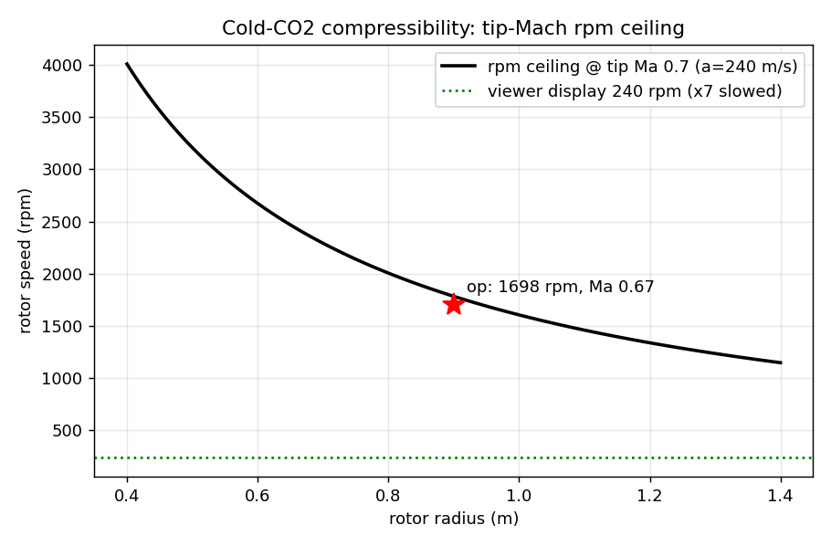
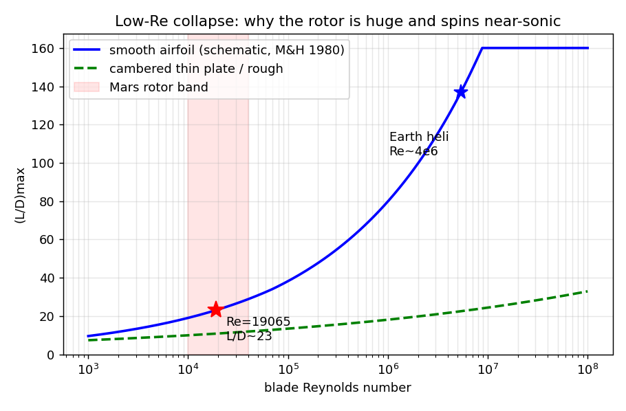

What hovering costs in 0.6% air
Three ledgers set the whole airframe: momentum theory, the speed of sound in cold CO₂, and the Reynolds number of a blade the size of a ruler.
Momentum theory first. Weight is 18.55 N over a 2.545 m² shared coaxial disc, so disc loading is 7.29 N/m² — and at ρ = 0.017 kg/m³ the rotor must throw that thin air downward at an induced velocity of 14.6 m/s. Ideal induced power is 272 W; with a figure of merit of 0.45 (honest for this Reynolds regime) the shaft needs 604 W, and the motors draw 805 W. The same airframe on Earth would need an induced velocity of just 2.8 m/s and 306 W. Mars makes it weigh 2.6× less and still costs 5.2× the power per newton of lift — because induced velocity scales as 1/√ρ, and 72× thinner air beats 2.6× weaker gravity every time.
Then compressibility. Cold CO₂ carries sound at only ~240 m/s, roughly 70% of Earth's, so the blade tips hit their Mach wall early: capping tips at 0.7 Ma allows 1,783 rpm at R = 0.9 m. The design sits just below it at 160 m/s tip speed — 1,698 rpm, Ma 0.667, blade loading CT/σ = 0.118. In the viewer the rotors turn at 240 rpm, exactly 1/7.1 of truth: at the real rate a 60 fps frame advances the blade 170° and the rotor reads as a stationary blur. Both numbers are written on the card.
And the reason the rotor is so big in the first place: at 0.10 m chord and 120 m/s the blade Reynolds number is 1.9 × 10⁴ — an Earth helicopter blade runs near 5 × 10⁶, a factor of 280. Below Re ≈ 7 × 10⁴ laminar separation collapses smooth-airfoil lift-to-drag from O(100) to about 20, and cambered thin plates start winning. Big disc, near-sonic tips, wide thin blades: all three walls push the same way, which is why the rotor dominates the vehicle instead of decorating it.


